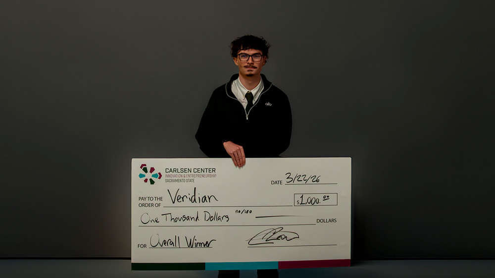

CAPITAL HACKS
SPRING 2026
Healthcare category winner and $1,000 overall winner.
WINNING IDEA // SECURESCRIBE
Private, on-device clinical documentation built around behavioral-health workflows—so nurses document an event once, review the structured record, and keep patient information local.
← BACK TO ALL WINNERS
Healthcare category winner and $1,000 overall winner.
Project: SecureScribe
SecureScribe has become a focused behavioral-health documentation product. It classifies and routes events locally, flags missing required information instead of inventing it, and keeps a nurse review in the loop before EHR handoff.